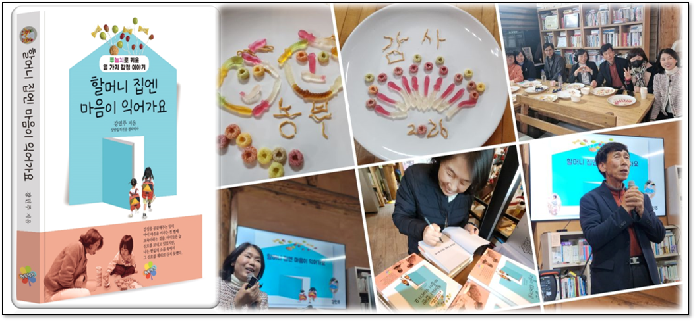
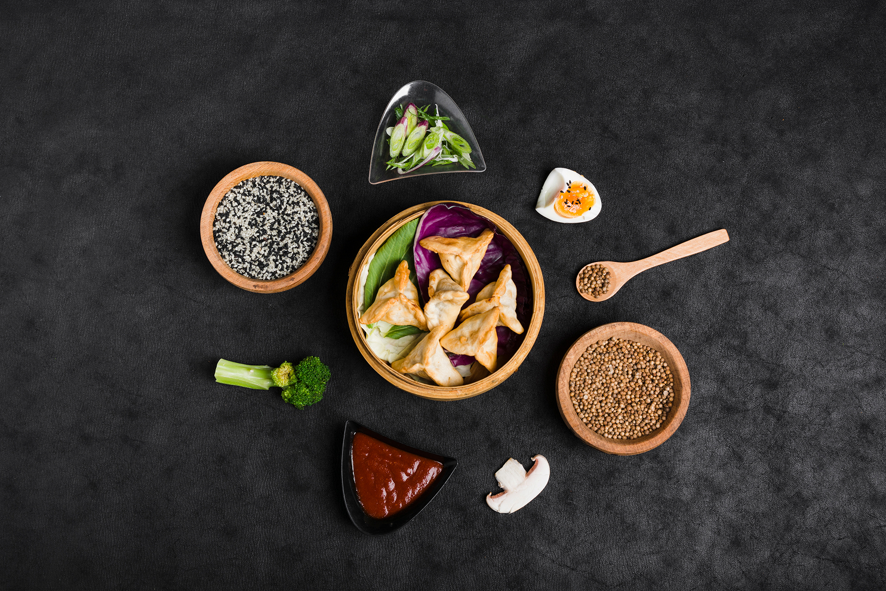
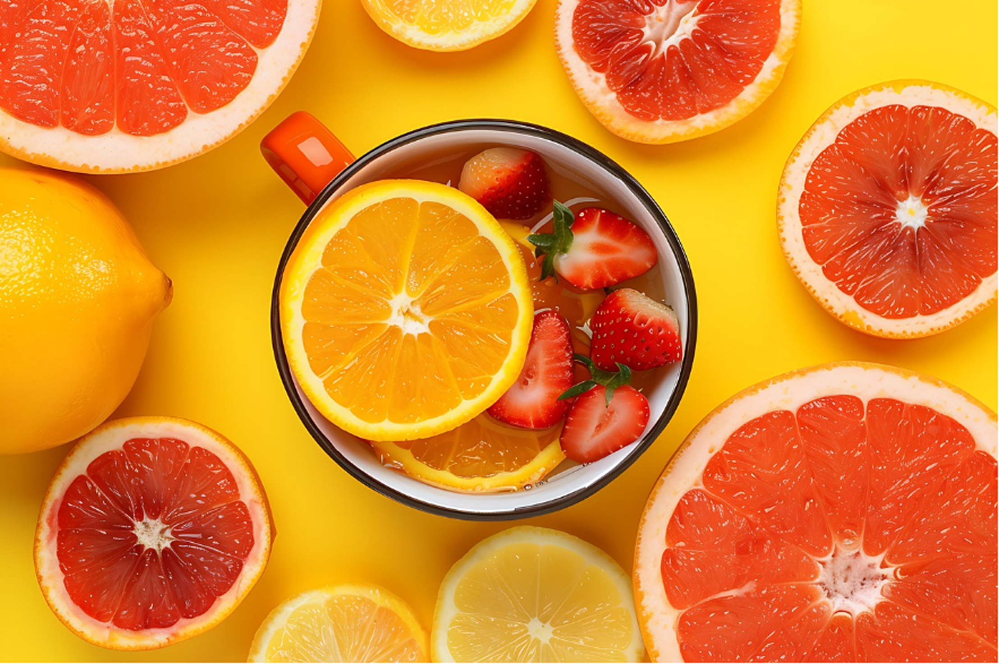

FEAT는 건강하고 아름다운 세상을 위해 함께 합니다.
안녕하십니까? 한국 푸드표현 예술 치료 협회(KFEAT)입니다.
저희 협회는 일상에서 친숙한 푸드재료를 매개로 인간의 내면을 심도있게 탐색하고 치유하는 ‘푸드표현예술치료’의 전문화와 보급을 위해 설립된 비영리 민간 단체입니다.
음식재료를 만지고 먹으며 자신의 감정을 형상화하고 소통하는 창의적인 표현예술치료 기법을 연구하며 건강한 사회를 위해 함께 합니다. K-FEAT 협회는 푸드표현상담 전문가 및 푸놀치 전문강사 양성을 위한 체계적인 교육 과정을 운영하고 있으며, 매년 정기적인 학술대회와 온·오프라인 연수를 통해 전문가들의 역량 강화를 선도하고 있습니다.
천안 본부를 중심으로 노인 치매예방, 청소년 정서지원 등 전 생애주기를 아우르는 맞춤형 FEAT 치유 프로그램을 개발하고,관련 전문 서적을 꾸준히 출간하며 국내 표현예술치료 분야의 허브 역할을 수행하고 있습니다. 마음의 허기를 채우고 건강한 자아를 찾아가는 여정에 저희 협회가 함께 하겠습니다.
푸드표현예술치료 집단: 균형과 조화, 따로 또 함께
이 이미지는 한사람 한사람의 에너지가 모여 오대양 6대주를 누비는 거대한 배가 됨을 의미하는 푸드표현 작품입니다.
최근 K-FEAT협회의 소식을 알립니다.
2026년 2월 지부장 힐링 집단상담 행복하게 잘 마쳤습니다.
2026년 1월 비자살적자해상담 연구를 거쳐 느린학습자 진행, 노인치매예방 푸드표현상담연구로 이어집니다.
2025년 5월 최고지도자과정 1기 출발 진행중이며, 최근 최고지도자과정 2기 출발 진행중입니다.
푸드표현예술 창작 표현활동은 다음과 같은 효과를 기대할 수 있습니다.
*자기 통합(Self-Integration): 하나씩 흩어져 있는 푸드재료를 선택하고 표현하며 자신의 무의식을 의식화하는 과정에서자아의 통합과 조화를 이루는 과정을 통해, 뇌의 대뇌피질을 자극하며 삶과 조화를 이루는 작업을 수행합니다.
*오감 자극을 통한 전두엽의 기능 강화: 후각, 미각, 촉각, 청각, 체감각 자극을 통해 대뇌 감각피질 자극으로 공감각 발달을 도우며, 이를 언어로 표출하게 함으로써 카타르시스를 경험하고 감정의 순화로 기억력 발달을 돕습니다.
*조절력 향상: 원하는 푸드재료를 선택하고 배치하며 재구성하는 과정은, 뇌의 Accelerated Learning 효과를 불러와 복잡한 문제들로부터 심리적 거리를 두는 '객관화' 연습에 도움을 주며 일상의 삶으로 돌아가 자신의 생활에서 일어나는 문제를 조절하고 통제하는 역할을 해 줍니다.
* K-Therapy인 FEAT는 삶의 치유예술로 나, 너, 우리, 나아가 공동체를 위해 공헌하는 삶을 위해 "어떻게 나 자신을 성장시키고 발전시키며 공헌(feat)할까?"라는 자아실현의 욕구를 충족시키는 무의식적 의미도 내포되어 있습니다.

2026년 3월 행복열기출판 강민주박사의 신간 푸놀치마음여행으로 만나는 힐링에세이 [할머니 집엔 마음이 익어가요]가 출판되어 힐링체험 첫번째 북콘서트를 행복하게 마쳤습니다.
푸드표현예술 작품의 의미: 균형과 연결의 미학 이 이미지는 단순한 음식 사진을 넘어, 자아의 중심을 찾고 주변 환경과의 조화를 모색하며 우주와 연결하는 푸드표현예술치료에 담겨있는 철학적 의미를 담고 있습니다.
찜기와 만두: 화면 중앙의 대나무 찜기는 자신을 보호하는 '안전한 울타리'를 상징합니다.
그 안의 세모꼴 만두는 천,지,인 삼위일체를 의미하며 개별적인 경험과 감정의 알맹이들이 잘 응축되어 있음을 뜻합니다.
이는 내면의 힘을 기르고 자신을 소중히 보살피는 '자기 돌봄(Self-care)'의 상태를 시각화합니다.
보라색 양배추와 잎채소: 만두 아래 깔린 채소는 감정을 받쳐주는 심리적 완충지대를 의미하며, 차분하고 성숙한 내면의 에너지를 상징합니다.
중심을 둘러싼 다양한 식재료들은 개인이 가진 '심리적 자원'과 '사회적 관계'를 의미합니다.
흑미와 참깨(검은색/흰색): 음양의 조화를 의미하며, 삶의 밝은 면과 어두운 면을 모두 수용하려는 통합적인 태도를 상징합니다.
브로콜리와 버섯: 생명력과 성장을 상징하는 브로콜리, 소박하지만 단단한 자존감을 상징하는 버섯은 일상에서 얻는 작은 행복과 에너지를 뜻합니다.
붉은 소스: 내면의 열정이나 무의식에 내재한 분노, 혹은 강렬한 생의 의지를 상징하는 '에너지의 응축점'으로 해석됩니다.
달걀과 씨앗(통후추/곡물): 새로운 시작과 가능성, 잠재력을 의미합니다. 작은 숟가락에 담긴 씨앗은 아주 작은 변화의 시작이 큰 성취로 이어지며 지구촌 전체에 번질 수 있음을 암시합니다.
검은 배경(Canvas): 어두운 바탕은 무의식의 심연을 상징하며, 동시에 주인공을 가장 돋보게 섬기며'무한한 가능성의 수용하는 공간'입니다.
방사형 배치: 중심에서 뻗어 나가는 배치는 에너지가 내면에서 외부 세계로 건강하게 발산되고 있음을 의미하며,내면에 이미 존재하고 있는 심리적 안정감이 확보된 상태에서 타인과의 소통을 준비하는 단계로 볼 수 있습니다.
자기 통합(Self-Integration), 창조적 연결(Creative Connection), 삶과의 조화(Harmony)
오감 자극을 통한 뇌의 가속화학습(Accelerated Learning)으로 인지와 정서의 발달, 언어 표현을 통한 절정경험
삶의 치유예술인 FEAT를 통한 조절력 향상, 삶의 재배치, 인생의 객관화 연습
결국, 이 표현을 통해 우리는 "천상천하유아독존 이라는 존귀한 존재인 나를 중심으로 주위와 세상과 우주와 연결되어 어떻게 조화로운 삶을 살 것인가?"라는 철학적 사유를 자연스럽게 알아차리게 됩니다.
이것은 이미 우리안에 존재하는 거대한 자원을 찾고 자신의 DNA속에 생래적으로 들어있는 거대한 힘을 회복하고자 하는 우리 모두에게 긍정적인 시각적 모델이 됩니다.

이 이미지의 첫인상을 결정짓는 것은 단연 '노란색(Yellow)' 배경입니다.
노란색의 치료적 의미
노란 색채는 정신과 지성의 상징이고,사고력과 지적인 힘을 나타내고 정신적인 활동을 고무시키는 색채입니다.
뇌과학적으로 노란색은 뇌에서 행복 호르몬이라 불리는 세로토닌의 분비를 돕는 색상으로 알려져 있습니다.
대뇌피질을 자극하며 낙관주의를 자극하는 밝은 노란색 배경은 보는 이로 하여금 즉각적인 즐거움과 낙관적인 기분을 느끼게 합니다.
노랑은 주목받기를 희망하며 새로운 시작이나 활기찬 아침을 연상시키는 심리적 '웨이크업 콜(Wake-up Call)'의 의미가 담겨있으며
노란색은 단순히 “밝은 색”이 아니라 뇌가 다시 살아나는 색이며, 푸놀치는 그 색을 “경험”으로 바꾸어 사람을 살리고 세상을 치유하는 삶의 치유예술입니다.
자몽과 딸기의 붉은 계열(Red & Orange)은 열정과 따뜻한 에너지, 활력을 상징합니다.
노란색의 명랑함 위에 붉은색의 에너지가 더해지면서, 단순한 안정을 넘어선 '의욕'과 '생동감', 활기찬 추진력을 의미합니다.
'원(Circle)'🍊이 주는 형태적 상징은 원만함이며 심리적 안정과 푸드표현 이미지 전체를 채우고 있는 과일 단면의 원모양과 접시의 '원형'은 인간의 세포를 구성하는 원자를 우리가 궁극적으로 추구하는 온전함을 상징합니다.
표현예술치료에서 '원'은 보호, 통합, 그리고 완전함을 상징합니다. 모나지 않은 둥근 형태들이 반복적으로 배치된 이 이미지는 시각적인 편안함을 주며, 복잡한 일상에서 벗어나 정돈되고 조화로운 상태에 있다는 안도감을 줍니다.
화면을 가득 채운 과일들의 배치는 무의식 속에 '결실'과 '풍요'를 상기시킵니다.
부족함 없는 자연의 혜택을 시각적으로 체험함으로써 심리적인 포만감과 만족감을 느끼게 합니다.
'나를 위한 돌봄(Self-Care)'☕ 중앙에 놓인 컵은 이 표현의 핵심(Focus)나타내며, 몰입과 휴식을 뜻하기도 합니다.
주변의 흩어진 과일들이 '재료'라면, 컵 속의 과일은 '결과물'입니다. 우리의 바쁜 일상에서 자신을 위해 차 한 잔을 준비하는 '자기 돌봄(Self-Care)'의 시간을 상징합니다.
이것은 푸드표현예술이 공감각적 치유로 시각적인 신선함과 동시에 상큼한 향(후각)과 맛(미각)을 상상하게 만듭니다. 이러한 공감각적 자극은 뇌의 이완을 도와 스트레스를 완화하고, 마치 짧은 명상을 한 듯한 심리적 정화 효과를 줄 수 있는데 이것이 FEAT의 핵심 이론입니다.